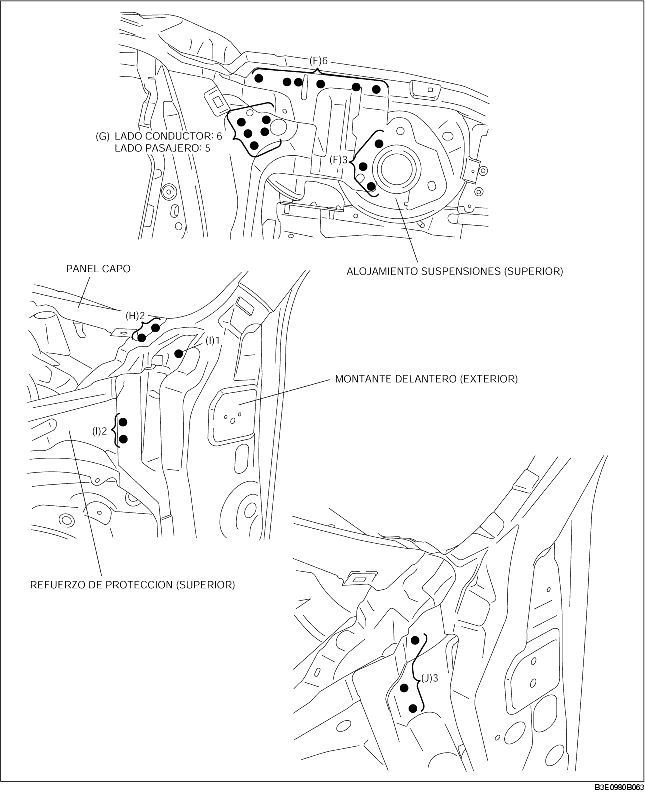

1. Taladrar los 26 puntos indicados por (A).
2. Taladrar los 65 puntos indicados por (B), 4 puntos en el lado del conductor indicados por (C) y 3 puntos en el lado del pasajero.
3. Taladrar los 5 puntos indicados por (D) desde la parte inferior.
4. Taladrar 1 punto indicado por (E) desde la parte inferior, que no puede verse desde el interior.

5. Taladrar los 9 puntos indicados por (F), 6 puntos en el lado del conductor indicados por (G) y 5 puntos en el lado del pasajero.
6. Cuando se quita el conjunto del bastidor lateral delantero, la bisagra del montante (interior) puede interferir con el refuerzo (superior) de proteccion y puede impedir la remoción. taladrar 2 puntos indicados por (H), 3 puntos indicados por (I) y luego abrir el montante delantero (exterior) hacia afuera.
7. Taladrar los 3 puntos indicados por (J) y quitar el conjunto del bastidor lateral delantero.
